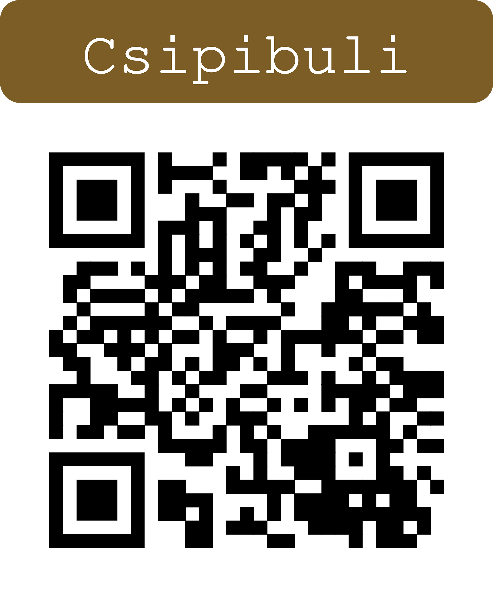

Szeretettel köszöntünk az esküvőnk weboldalán!
Köszönjük, hogy velünk ünneplitek a nagy napunkat.
Itt minden fontos információt megtaláltok a helyszínről, menetrendről és visszajelzésekről. Ha kérdésetek van, bátran vegyétek fel velünk a kapcsolatot!
Egy biztos: a kényelmes cipőt ne hagyjátok otthon, eltáncoljuk az összes papucsot. Igen, az összeset!
Lagzink helyszíne a több mint 500 éves Ó-Ebergényi kastély, melynek falai számtalan történetet (és talán néhány kísértetet is) őriznek.
Büszkén mondhatjuk, hogy egy valódi történelmi műemlék kertjében mondhatjuk ki az Igen-t.
Bár Budapestről és környékéről hosszabb az út, bízunk benne, hogy a helyszín titeket is legalább annyira elvarázsol majd, mint minket.
Pontos cím: 9763 Vasszécseny, Ebergényi fasor 10.
A szállásban is igyekszünk segíteni, hogy az észveszejtő buli után mindenki kényelmesen megpihenhessen.
A kastélyban, illetve a közeli Stőger panzióban tudunk szállást ajánlani. A férőhelyek száma korlátozott, ezért köszönjük a rugalmasságotokat. Ha belefér, egyeztessetek egymással is, mivel több 3–4 fős szoba érhető el, míg 2 fős szobából kevesebb van.
Aki a Stőger panzióban száll meg, annak a kastély csapata ingyenes transzfert biztosít a lagzi után.
Természetesen más szállást is választhattok, ebben az esetben a transzfer megszervezése egyénileg történik.
A menüsor egyeztetés alatt van a kastéllyal. A pocakunk (hisz ismertek minket) kiemelt figyelmet kap, így senki nem marad éhes.
Ha valamilyen speciális diétát követtek (glutén-, laktóz-, tejérzékenység, vegetáriánus, stb), mindenképpen jelezzétek nekünk!
Az esküvőt követő reggelen józanodó reggeli kérhető a kastélyban. Ha szeretnétek élni vele, ezt is jelezzétek felénk.
A reggeli költsége 2500 Ft/fő.
Egyikünk sem szívbajos, mindenki azt vesz fel, amit szeretne. A lényeg, hogy érezd magad nagyon jól a szettedben és viselj bátran vidám színeket!
Na ez az a kérdés, amit mind a ketten úgy kerülgetünk, mint macska a forró kását.
Otthonunk jelenleg nem szenved semmiben hiányt (kivéve talán még 2 macska, egy shiba inu és egy régi Midwayes MK Arcade gép).
Szóval, ha nem tudod, mit adj, akkor ne aggódj! Annak örülünk legjobban, ha együtt ünnepelünk!
Amennyiben mégis szeretnél valamivel hozzájárulni a nagy naphoz, megtáncoltathatod a menyasszonyt!
Kérdés esetén kérjük, keresd Lillát vagy Mersét telefonon, messengeren vagy bármilyen más elérhetőségen.
Részvételi szándékodat az alábbi QR kódra kattintva vagy befotózva tudod jelezni:
